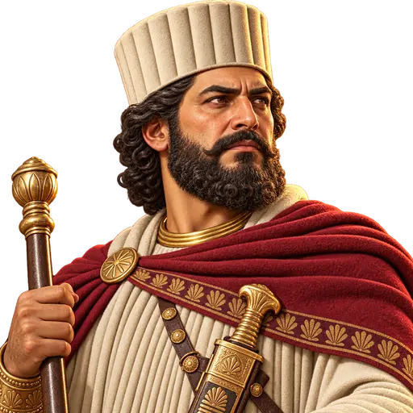
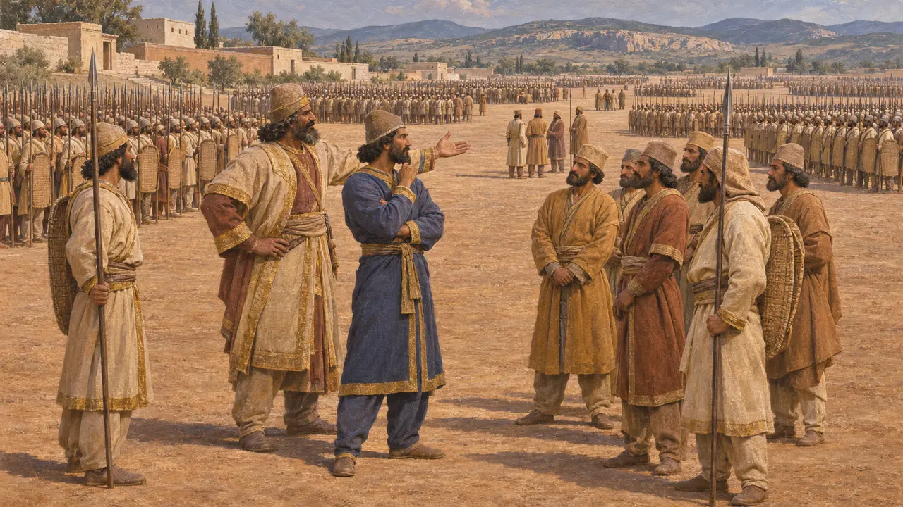
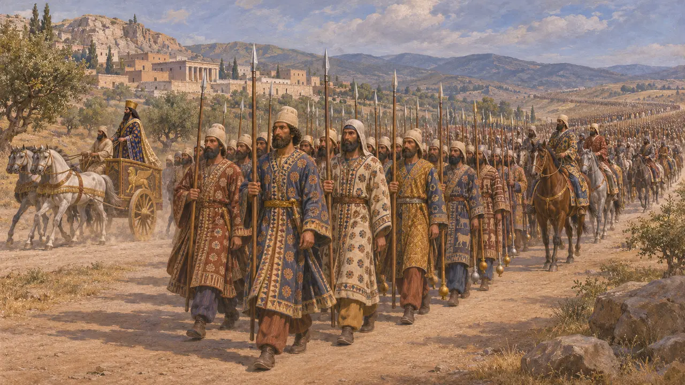
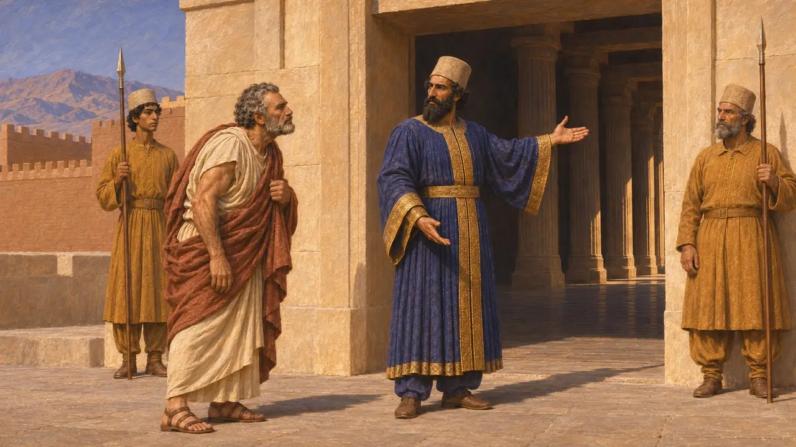
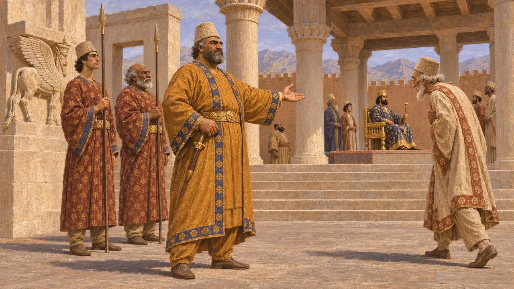

Ansiklopedi › Askerler ve gemiler

Hazarapatiş
Pers 'bin kişinin komutanı'; subay rütbesi ve saray makamı, MÖ 6.-5. yüzyıl
Hazarapatiş, Yunanlıların khiliarkhos dediği Pers "bin kişinin başı"ydı. Bu unvan, Kralın ordusundaki biner kişilik birliklerin subaylarını ve sarayda Krala erişimi denetleyen kraliyet muhafızının komutanını adlandırırdı. Kanıtlar az ve çoğunlukla Yunan kaynaklıdır; bu nedenle saraydaki bu makamın ne kadar güçlü olduğu hâlâ tartışılmaktadır.
Oyunda: Oyun, hazarapatişi, varlığı 10 hücre içindeki askerlerin %15 daha sert vurmasını ve darbelere daha iyi dayanmasını sağlayan bir kalkan birliği olarak gösterir; bu bonus oyunun bir soyutlamasıdır. Tarihte bu unvan aynı zamanda Kralın baş muhafızını ve saray görevlisini de adlandırırdı.

Onluk düzenli bir orduda rütbe
Antik anlatıHerodotos'a göre Kserkses'in MÖ 480'de yönettiği ordu onluk, yüzlük, binlik ve on binlik birliklere ayrılmıştı. Her birliği toplayan komutanlar binlik ve on binlik komutanlarını atadı. On binlik komutanları da yüzlük ve onluk başlarını atadı. Bu düzende binlik komutanı, yüzlük başlarıyla on binlik komutanları arasında yer alıyordu ve büyük bir orduda bunlardan pek çok bulunurdu.
Herodotus 7.81

Krala en yakın bin kişi
Antik anlatıHerodotos, Kserkses'in Sardes'ten yola çıkışını anlatırken Kral'ın hemen arkasına seçkin bin Pers mızrakçısı, onların ardından bin atlı, sonra da on bin yaya yerleştirir. Bu on binin bininin mızraklarının dip uçlarında altın, geri kalanlarınınkinde gümüş narlar vardı. Herodotos burada bir khiliarkhos adı vermez. Bu muhafız birliği ile saray makamı arasındaki bağ modern bir çıkarımdır.
Herodotus 7.41

Kral'ın kapısının bekçisi
Antik anlatıBeş yüzyılı aşkın bir süre sonra yazan Plutarkhos, sürgündeki Themistokles'in MÖ 465 civarında önce khiliarkhos Artabanos'a gittiğini, Artabanos'un da huzura çıkmak isteyen herkesin Kral'ın önünde eğilmesi gerektiğini açıkladığını anlatır. Bu hikâyede Kral'a kimin ulaşacağını ve nasıl davranacağını khiliarkhos belirler. Olay oyunun kapsadığı dönemden sonraya düşer ve geç dönem bir yazar aracılığıyla bize ulaşır; bu yüzden makamın kökenlerini değil, sonraki hâlini gösterir.
Plutarch, Themistocles 27

Muhafız komutanı mı, sadrazam mı
TartışmalıEski Farsça hazarapatiş sözcüğü başka dillerdeki karşılıklarından yeniden kurulmuştur ve kraliyet yazıtlarında geçmez. Bazı tarihçiler khiliarkhosu yalnızca Kraldan sonra gelen bir baş vezir olarak gördü. Aralarında Briant'ın da bulunduğu diğerleri ise Yunan kanıtlarını, bu kişinin bir muhafız komutanı ve kabul törenlerinin yöneticisi olduğunu gösterecek biçimde yorumladı. Diodoros bu rütbenin önce Pers krallarınca itibar gördüğünü, daha sonra Aleksandros döneminde de sürdüğünü ve onu Hephaistion'un taşıdığını söyler.
P. Briant, From Cyrus to Alexander, 2002; Diodorus 18.48; Arrian, Anabasis 7.14
Kaynaklar
- Herodotus 7.81
- Herodotus 7.41
- Plutarch, Themistocles 27
- P. Briant, From Cyrus to Alexander, 2002
- Diodorus 18.48
- Arrian, Anabasis 7.14